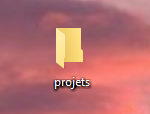

Dans un premier temps, il faut créer un dossier qui regrouperas tous nos dossiers de projets de code

Ouvre le dossier "projets", et à l'intérieur de celui-ci, il faut créer un autre dossier au nom du projet que tu veux réaliser.
Par exemple ici, je l'ai appelé tuto_html

/!\ Pour le nom de dossier/fichier il ne faut pas mettre d'espaces.
On peut les remplacer par des tirés vers le bas (underscore [touche 8]).
J'ouvre le dossier tuto_html et dans celui-ci je vais encore créer deux dossiers. Un dossier images et un autre css

Le dossier images regroupera toutes les images que nous aurons besoin pour la création du site.
Nommez les simplement pour qu'elles ne soient pas compliqué à écrire.
Exemple : maison.png, fleure.jpg
Le dossier css regroupera toutes les feuilles de style dont nous aurons besoin.
A la racine du dossier HTML, il faut créer la page Html, c'est celle qui va servir pour le premier code que nous allons faire.
Tout d'abord il faut vérifier que le nom des extensions soient cochées